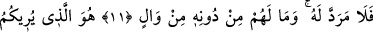

GÖK GÜRÜLTÜSÜ DE
O’NU TESBİH EDER
11. Onun önünde ve arkasında Allah’ın emriyle onu koruyan takipçiler (melekler)
vardır. Bir toplum kendilerindeki özellikleri değiştirinceye kadar Allah, onlarda
bulunanı değiştirmez. Allah bir topluma kötülük diledi mi, artık onun geri
çevrilmesine imkan yoktur. Onların Allah’tan başka yardımcıları da yoktur.
12. Size korku ve ümit içinde şimşeği gösteren ve (yağmur dolu) ağır bulutları
meydana getiren O’dur.
13. Gök gürültüsü O’nu hamd ile tesbih eder. Melekler de O’nun heybetinden
dolayı tesbih ederler. Onlar, Allah hakkında mücâdele edip dururken O, yıldırımlar
gönderip onlarla dilediğini çarpar. Ve O, azâbı pek şiddetli olandır.
“Onun” yani Allah’ın veya zikredilen sıfatlara sâhip insanın “önünde ve arkasında”
günah işlediğinde kendisi için duâ ederek, günahından tevbe edip Allah’a yönelir
ümidiyle Rablerinden ona mühlet vermesini isteyerek “onu Allah’ın emrinden” belâ ve
cezâsından ya da Allah’ın kendilerine korumalarını emrettiği zararlı şeylerden
“koruyan takipçiler (melekler) vardır.” Yâni, Allah’ın öyle melekleri vardır ki onlar
insanoğlunun önünde ve arkasında bulunur, insanoğlunu tamamen kuşatır ve bir kısmı
diğer bir kısmını takip eder.
“__WORD__/tâkipçiler el-Kamus’ta belirtildiği üzere gece ve gündüz melekleridir. Bazısı
gece bazısı da gündüz olmak üzere yeryüzüne birbirlerinin peşi sıra indikleri için
hafaza meleklerine ‘muakkıbât’ denir. Bu meleklerden bir grup gidince arkasından başka
bir grup gelir. Yani gece melekleri gündüz meleklerinin arkasından, gündüz melekleri de
gece meleklerinin arkasından gelir. Sabah ve ikindi namazlarında bir araya gelirler.
Mücâhid der ki: “Hiçbir kul yoktur ki gerek uyurken, gerekse uyanıkken kendisini
insanlardan, cinlerden ve zararlı hayvanlardan koruyan, sırf kendisiyle görevli bir